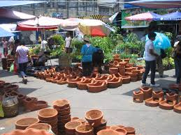
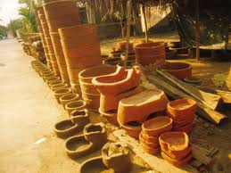

Explore Our Pottery Creations
Discover the Heritage of Banga Pottery
The town of San Nicolas, Ilocos Norte, is renowned for its hand-crafted Banga clay pots, which are central to the region's cultural identity.

These unique pots are shaped through a traditional method called 'Damili,' a pottery technique that has been passed down through generations.

The iconic Sirkulo, a symbol of San Nicolas, showcases the skillful craftsmanship that makes this region famous for its pottery.

Our pottery is sold across neighboring towns, with prices ranging from Php15 to Php300, making it accessible to all who wish to take home a piece of tradition.